| [ Team LiB ] |
|
13.8 Using the RGA to Determine Variable PairingsIn the previous section, we showed how to tune controllers, assuming that a decision on the pairing had already been established. The purpose of this section is to give some examples to illustrate how inputs and outputs should be paired to form MVSISO control loops. Example 13.1, continuedConsider the whiskey-blending problem, which had the steady-state process gain matrix and RGA: 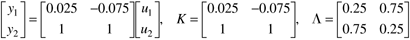 indicating that the output-input pairings should be y1-u2 and y2-u1. In order to achieve this pairing, we could use the block diagram shown in Figure 13-13. Figure 13-13. Control block diagram for 1-2/2-1 pairing.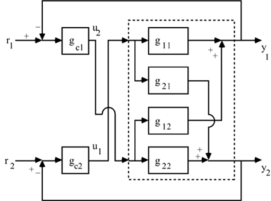 Notice that the difference between r2 and y2 (the error in output 2) is used to adjust u1, using a PID controller (gc1), hence, we refer to this pairing as y2-u1. Similarly, the difference between r1 and y1 (the error in output 1) is used to adjust u2, using a PID controller (gc1); hence, we refer to this pairing as y1-u2. This corresponds to the physical diagram shown in Figure 13-3b. An alternative is to rearrange (renumber) our outputs or inputs so that the natural pairing is y1-u1 and y2-u2 (in the renumbered variables). For example, we could renumber the outputs. Let 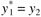 and 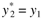, where * indicates the newly redefined variable. This corresponds to the control and instrumentation diagram shown in Figure 13-14. Figure 13-14. Control instrumentation diagram for redefined variables.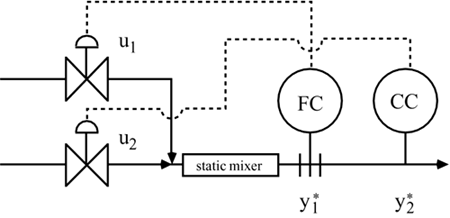 We can write 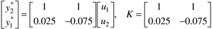 or 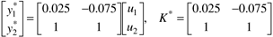 The reader should verify that the new RGA is 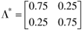 Notice that redefining the outputs is equivalent to switching the rows of the process gain matrix related to the corresponding outputs (in this case, switching rows 1 and 2 is equivalent to exchanging outputs 1 and 2). The new RGA is found by making the same transformation of rows in the RGA, as was performed on the process gain matrix. Similarly, redefining the inputs is equivalent to switching the columns of the process gain matrix related to the corresponding inputs. The new RGA is found by making the same transformation of columns in the RGA, as was performed on the process gain matrix. GeneralizationWe have shown, by way of example, that outputs can be renumbered by switching the rows in the process gain matrix, and inputs can be renumbered by switching columns in the process gain matrix. Each time we perform this exchange of variables, we do not need to recalculate the relative gain array—we simply find the new RGA by performing the same row and column exchanges on the RGA that we performed on the process gain matrix. By performing this exchange (renumbering) of variables, we can always rearrange our inputs and outputs such that loop 1 has a pairing of y1 and u1 (in the newly defined variables). For this reason, we will often assume that a y1-u1 pairing has been made and discuss the effect of l11 on controller tuning. Example 13.4: A Three Input–Three Output SystemConsider the following RGA for a system with three inputs and three outputs: 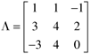 How would you choose input-output pairings for this process? Solution:
Look at row 3 in the relative gain array; this corresponds to output 3. We would not pair y3 with u3 because of the 0 term. We also would not pair y3 with u1 because of the –3 term. This means that y3 must be paired with u2. Let us indicate this choice in our RGA, 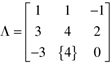 Now we have eliminated the third output (row) and the second input (column) from our selection process. From the first row (output), we see that we would not pair y1 with u3 because of the –1 term. We also cannot pair y1 with u2 because we have already paired u2 with y3 (hence, the circle). Our only choice is to pair y1 with u1. Let us indicate this choice in our RGA, 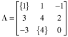 Now, we have eliminated outputs 1 and 3 (rows 1 and 3) as well as inputs 1 and 2 (columns 1 and 2). We have no choice but to pair y2 with u3, and we make that choice below: 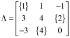 Notice also, that we can renumber our outputs, such that pairings of the new variables occur on the diagonal. For example, if we define 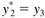 and 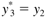, this is equivalent to switching the second and third rows to obtain 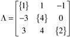 which is based on the new output vector 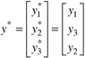 Example 13.5: A Four Input–Four Output Distillation Column (Alatiqi and Luyben, 1986)The steady-state gain input–output relationship is 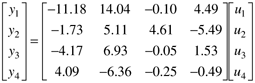 The RGA (using the m-file rga.m shown in Appendix 13.2) is 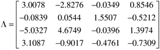 Now, let us systematically choose our pairings. Looking at column 3, we see only one relative gain that is not negative, therefore, we must pair y2 with u3. Looking at row 4, we notice that there is only one relative gain that is not negative, therefore, we must pair y4 with u1. Looking at column 2, there are 2 nonnegative relative gains, but we have already used output 2, so we must pair y3 with u2. This leaves y1 and u4, which, fortunately, has a favorable relative gain (0.8546). If the y1-u4 relative gain had not been favorable, we would have been forced to drop output 1 and input 4 and simply have three control loops for our system. |
| [ Team LiB ] |
|